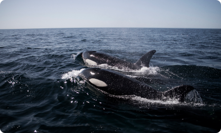
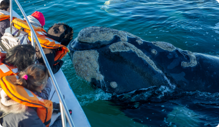
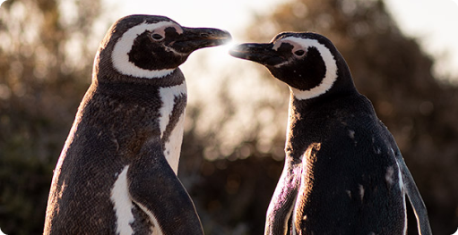

Cuales son los animales que se pueden ver?
Orca
Las orcas de la Península Valdés son mundialmente famosas por su comportamiento único de varamiento intencional. Este método de caza, en el que las orcas se lanzan a la orilla para capturar sus presas (cachorros de lobos marinos o elefantes marinos), es una habilidad que se transmite culturalmente de una generación a otra dentro de las mismas familias de orcas. Si bien pueden verse de manera repentina en cualquier lugar de la Península, es más probable observarlas en Punta Norte y Caleta Valdés en los meses de febrero, marzo y abril, que es la época de nacimiento de lobos y elefantes marinos.
Ballena
Todos los años cientos de ejemplares llegan al Área Natural Protegida Península Valdés para aparearse, dar a luz a sus crías y amamantar. También arriban los juveniles a socializar y las hembras adultas llevan a sus crías para el destete.
Área Natural Protegida “El Doradillo”:las ballenas se congregan para reproducirse y amamantar a sus crías a solo 15 kilómetros de la ciudad. A lo largo de los 25 kilómetros de costa ubicados entre Punta Arco y Cerro Prismático, podrás encontrarte con estos imponentes cetáceos a apenas unos pasos de distancia.
Puerto Pirámides - Avistaje Embarcado: los avistajes embarcados sólo se pueden realizar en Puerto Pirámides, donde hay 6 empresas que realizan oficialmente esta actividad. Puerto Pirámides se encuentra a 100 km. de Puerto Madryn, por ruta de asfalto. Las excursiones tienen una duración promedio de 1 hora y media.
Pinguinos
Caminar entre pingüinos es una de las excursiones mas elegidas por los amantes de la naturaleza. Las colonias continentales de pingüinos de Magallanes de Península vales y Punta Tombo son las mas grandes del mundo.
Delfin
Avistaje de Delfín Oscuro: entre diciembre y abril, las embarcaciones zarpan desde el centro de la ciudad de Puerto Madryn, para transportarte a una experiencia sorprendente: el avistaje de estos mamíferos marinos en su hábitat natural.
Avistaje de Toninas Overas: además, siempre está la posibilidad de embarcarte hacia el avistaje de estos extraños ejemplares desde el Puerto de Rawson, ubicado a solo unos kilómetros de Puerto Madryn.


Lobo Marino
Se los puede observar en la costa durante todo el año. En época de reproducción y cría se agrupan en apostaderos, tanto en playas con pendientes suaves de canto rodado, como en zonas rocosas. Durante la temporada invernal abandonan sus colonias para agruparse en apostaderos no reproductivos.

Elefante Marino
Estos mamíferos marinos son extraordinarios buzos que pasan la mayoría de su vida en alta mar. Se acercan a las costas a reproducir y mudar la piel. Concentran su actividad reproductiva, nacimientos y cópulas (que incluyen peleas de enormes machos) durante los meses de septiembre y octubre, que es el momento del año en que podemos observar el mayor número de ejemplares en las playas de Caleta Valdés en Península Valdés y Punta Ninfas, en la entrada al Golfo Nuevo.